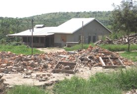
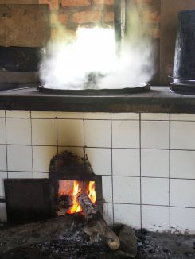
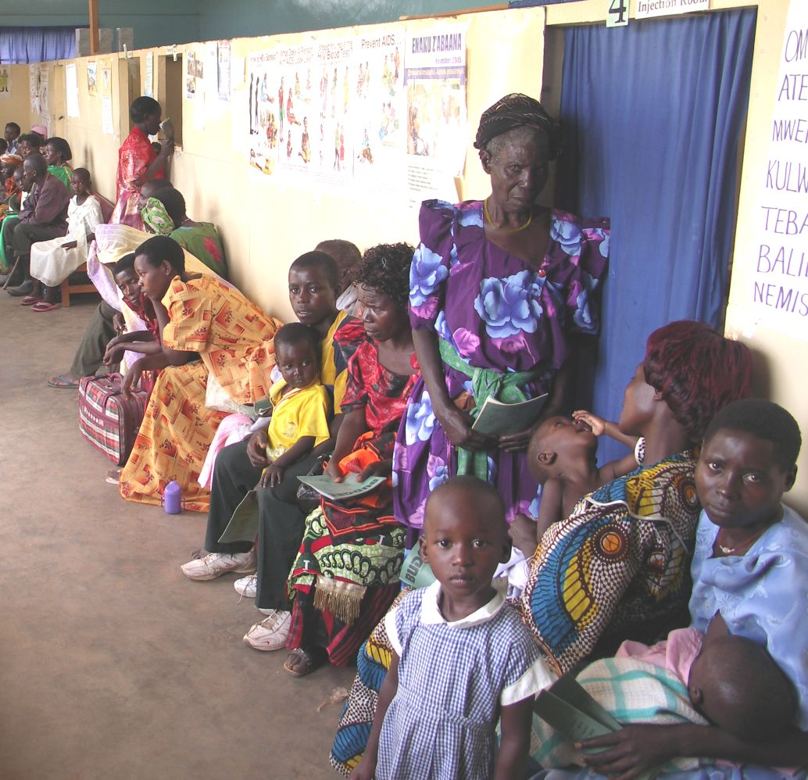
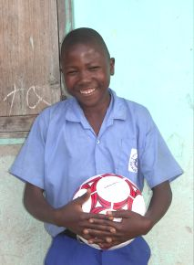
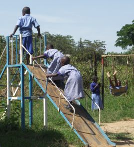

May 2007
Bram Moolenaar, treasurer of ICCF Holland, visited the Kibaale Children's
Centre in May 2007. This is his report.
Click on the images below for an enlargement.
You can also find more pictures here
and even more on Picasa.

The broken down kitchen in the foreground, the new one in the background

Furnace inside the new kitchen
|
|
|
No news is good news
I have visited the project regularly the past years. That is why my
visit was quite predictable. And that is good news!
Because it means that the project is stable and is helping many children.
Quite special for a project that has been active for almost twenty
years.
There are a number of new buildings and activities. Most noticeable is that
the old kitchen has been torn down. This was one of the oldest buildings on
the campus, that could be noticed by the cracks in the walls. The new
kitchen is not just much bigger, having four furnaces, but also much easier to
clean. De floor goes down to one side and a gutter leads the waste water
outside.
The cook is still the same guy: Birra. He has been working for the project
since the beginning. We have more and more employees that work many years for
the project, apparently they enjoy the work. It is nice to see familiar faces
when walking around the compound.
Another new building contains two science labs. They teach chemistry and
physics here. The old science building is now used for art classes. I saw a
few beautiful sketches there (see the
pictures page).
The building of the nursery school is also getting old. I helped building it
in 1993. There is a plan to build new classrooms for the nursery and
kindergarten next to the primary school, together with two special needs
classes. The old building will then be renovated and used for gatherings and
lunch.
Another new thing is the solar power system. Two of these have been
installed, one at the staff quarters and one at the teacher housing. The
first one works very well, there is power 24 hours a day now. Very useful for
computer work and having light late at night. At the teacher housing there is
the problem that they use equipment that consumes a lot of power, such as
water heaters, causing the power to run out. Therefore the generator still
runs in the evening.
All the old metal water tanks are being replaced with plastic ones. They
last much longer. Also for the latrines there are plastic "houses". The
prices have come down quite a bit, we have a good deal with the supplier.
It's now even cheaper to use a group of plastic tanks instead of a big
concrete one. Such a setup will soon be installed at the secondary school.
|
Clinic
It is busy again. Every time I visit the project I make this same picture of
a waiting room full of patients. But it's really more busy than past years
now. There is a new clinical officer, and she does her work very well. The
result is that the number of treatments has gone up by 50 % since last year.
Part of this is sadly caused by the drought last year. Malnutrition and bad
water quality cause more sickness.
It is clear that the clinic has grown a lot. The staff works very hard to
manage all the work. We desperately need more staff. The rooms are also
insufficient. The walls are only two meters high, there is no privacy. There
are plans to build a completely new clinic. We'll have to see if we can find
sufficient funding for this.
|
|
|

Another busy day in the clinic
|

Dennis, one of the sponsored children I visited
|
|
|
Children
I visited a number of children at home again.
It is noticeable that they suffered from the drought last year. All the
families I visited were given extra food. For some of them it was also quite
difficult to get water, because the river dried up. We have plans to make
bore holes to prevent this from happening again.
Because all these families are missing one or both parents, they don't have
the means to maintain the house. Two families have been helped with a new
kitchen. One other has a kitchen that is gradually falling apart. That is
because the walls are made of sticks and clay. Fortunately there is a group
of teachers and children that helps these families. At least for as far the
materials can be obtained at a minimal price, for other parts, such as windows
and roofing, sponsoring is required.
For the children it's also important to be able to play. At the primary
school a couple of playing grounds have been created. There are wigwags,
swings and even a small toboggan. They have a lot of fun there and laugh a
lot.
|
Internet
The internet connection that I had setup last time, using a mobile phone and a
special antenna, was still working, more or less. There is a problem
now and then, depending on the weather conditions and MTN, the mobile phone
company. At the time of my visit e-mail was mostly
not working. And the connection is charged per Kbyte, thus sending larger
files, such as pictures, is too expensive.
We had been talking about getting satellite internet before. It is expensive,
but has the advantage that it works reliably, and the connection is outside of
Uganda, thus bypassing the main bottleneck (Uganda has no fibre connection to
the internet). A condition is that power is available. Now that
the solar system is working that has become a lot simpler.
While I was in Kibaale we looked into the alternatives again and
found one provider, AFSAT, that is affordable. The prices have gone down the
past year considerably. Fortunately we also had a
visitor who was willing to sponsor it. As I'm writing this the connection has
been installed! For now it will be used by the administrative staff.
Hopefully we can use it for the school staff and children later. This will
open up a whole world of new possibilities.
|
|
|

Children playing in the new playground by the school
|
The future
Last year the drought was a big problem. Currently there is some water in the
river, but we fear it will dry up again in August. Therefore a plan was made
to create five boreholes. The one we already have at the project shows that
the filter system
to take out the iron oxide works well. Without this filter the water would be
dirty and unsuitable for drinking. I hope we manage to get this done soon.
Kibaale is a small town and access to information is difficult. Books are
hard to get and not affordable for most. I hope that we can make internet
available for teachers and students. This will provide them access to an
enormous amount of knowledge. This will especially give the brighter
students a chance for better development.
All together it looks hopeful. There is a lot of work still to be done, but
slowly and steadily it goes in the right direction. It is very clear that the
help we are giving here is very much needed and really does help the children.
Bram Moolenaar
more pictures
even more pictures on Picasa
top
|

{kind=link}
{kind=link}
{kind=link}
{kind=link}
{kind=link}